Apache NetBeans
Apache NetBeansLatest release
Writing POV-Ray Support for NetBeans IV—Providing Project Templates
| This tutorial needs a review. You can edit it in GitHub following these contribution guidelines. |
Project Templates
We left off with a module that let us open POV-Ray projects, and basic support for POV-Ray files, but no way to create a new POV-Ray project.
So the first step is to add the ability to use the New Project Wizard to create POV-Ray projects. The IDE gives you the ability to embed a project in a module as a ZIP file, and add the necessarily configuration and code to make it available from the New Project wizard and unpack it in a directory of the user’s choice. We will make use of that functionality to create our project templates.
First we need to have a project to zip up, so we will create that by hand. You can do this in NetBeans, just by creating the appropriate folders and files.
-
First create a new package in the Povray Projects project,
org.netbeans.examples.modules.povproject.templates. This will simply help us keep the sources more organized.
-
Switch to the Files window in the IDE and find the root folder for the Povray Projects project.
-
Create the following directory structure underneath that directory:
-
templates/—a root directory for our template projects -
EmptyPovrayProject/—Base directory for an empty project -
images/ -
pvproject/ -
project.properties -
`scenes/ `
-
EmptyPovrayProject.pov -
SamplePovrayProject/—Base directory for an project with sample .pov files -
images/ -
pvproject/ -
project.properties -
`scenes/ `
-
SamplePovrayProject.pov
-
In the Files window, you should now see the following:
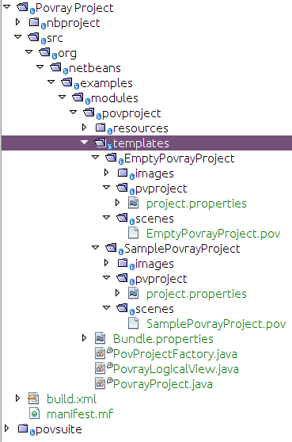
We should have some content for the sample POV-Ray project’s file. You can copy and paste the initial content into the SamplePovrayProject.pov from here:
// This is a simple red sphere
// first, the camera position
camera {
location <2,5,-10>
look_at <0,0,0>
}
// now, some light
light_source {
<0,-10,0>
color rgb <1,1,1>
}
// the sphere
sphere {
<0,0,0>, 5
pigment { color rgb <1,0,0> }
}A POV-Ray file that will render a NetBeans logo can be found here!
Now we are ready to add our sample projects—but here we have to cheat just a little: the IDE will only package up a sample project that it has open, and in our development IDE we don’t have support for POV-Ray projects, so our hand-created projects won’t be recognized. But, we already have a module that provides support for POV-Ray projects available. So we will cheat just a little bit and use that to fool it into embedding our new POV-Ray projects in our module:
-
Right-click the Povray Project and choose Create NBM:
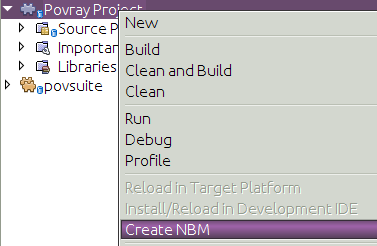
-
Switch to the Files window (Ctrl-2), where you should see the NBM file that has been created:
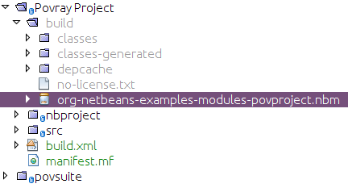
An NBM (*N*et*B*eans *M*odule) file is the deployment unit of a module. It contains the JAR, together with some metadata needed for installing the JAR and activating it in an application.
-
In the IDE, go to Tools | Plugins in the main menu. In the Downloaded tab, browse to the NBM file that you created in the previous step.
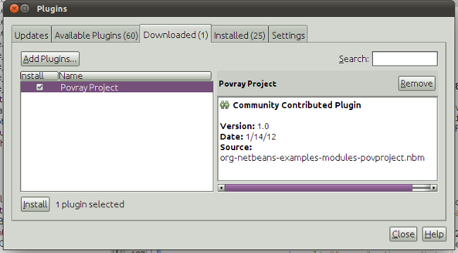
Click Install and then click through all the dialogs, saying Yes and OK everywhere, and in the end you will have installed the POV-Ray project support into the development IDE.
-
Open
templates/EmptyPovrayProjectandtemplates/SamplePovrayProjectinto the IDE, which is now possible because the IDE now supports POV-Ray projects:
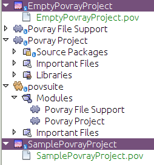
-
Right-click the Povray Projects module and choose New > Other. In the Module Development category, choose the Project Template wizard, as shown below:
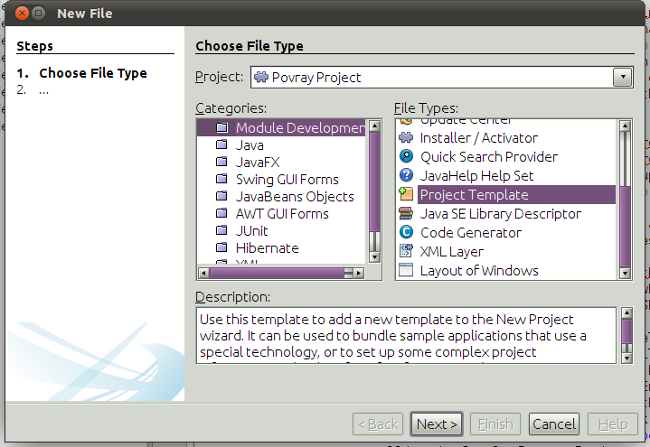
Press Enter or click Next.
-
On the next page of the wizard, select EmptyPovrayProject from the combo box—this is what we will package up.
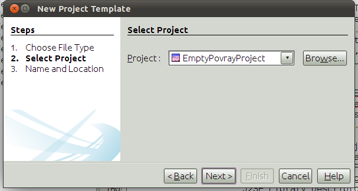
Click Next or press Enter.
-
Now you are prompted for a name. Enter "EmptyPovrayProject" for the Template Name, and "Empty Povray Project" for the display name. Type "POVRay" as the category. Select the "templates" package for storing the new project template.
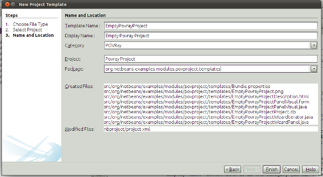
Click Finish or press Enter.
-
Now repeat the above steps, from 5 to 7, for
templates/SamplePovrayProject, calling it Sample Povray Project and choosing the sample package, that is, thetemplatespackage, for storing the template:
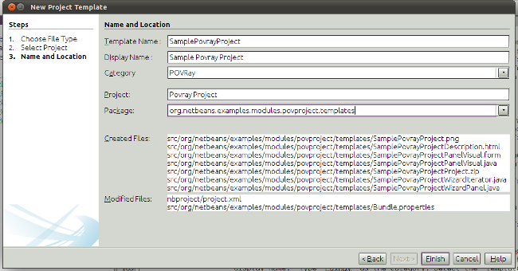
The above steps created a number of files on disk—as shown below:
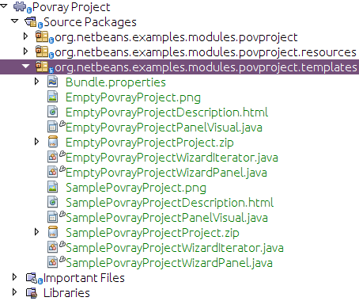
There are two new ZIP files in our module that are zipped copies of the projects. The other files provide wizard functionality for instantiating our two projects from the New Project wizard.
Run the application, go to File | New Project, and you will see the two templates ready to be used:
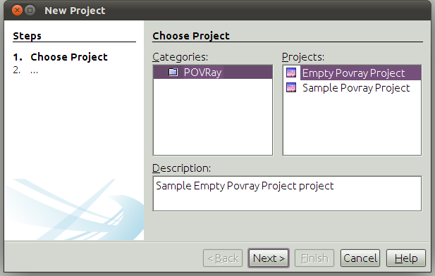
Complete the wizard and you will have a new POV-Ray project ready to be developed further.
Modifying the Build Script
Our initial sample projects are probably not in their final form, so it would be nice to have the build script automatically rebuild the zip files of the sample projects whenever we build the Povray Projects module—that way we can simply modify the samples at will, and whenever we do a build they will be up-to-date. So we’ll make a few changes to the build script:
Add the following targets to the Ant build script in the Povray Projects module:
<target name="netbeans" depends="package-samples,projectized-common.netbeans"/>
<target name="package-samples">
<delete file="${basedir}/src/org/netbeans/examples/modules/povproject/templates/EmptyPovrayProjectProject.zip"/>
<delete file="${basedir}/src/org/netbeans/examples/modules/povproject/templates/SamplePovrayProjectProject.zip"/>
<zip compress="9" basedir="src/org/netbeans/examples/modules/povproject/templates/EmptyPovrayProject"
zipfile="${basedir}/src/org/netbeans/examples/modules/povproject/templates/EmptyPovrayProjectProject.zip"/>
<zip compress="9" basedir="src/org/netbeans/examples/modules/povproject/templates/SamplePovrayProject"
zipfile="${basedir}/src/org/netbeans/examples/modules/povproject/templates/SamplePovrayProjectProject.zip"/>
</target>If we were using a version control system such as CVS to store our source code, now would be a good time to mark the two ZIPs as ignored (add them to .cvsignore or equivalent), since they will be recreated whenever you build the project.
Next Steps
In the next section we will create the API needed for communication between our two current modules.